Explorer
Runs development tasks with ordinary tools and records trajectories from both successful and failed executions.
Under review
![Overview of EvoTER. Left: the embodied tool-use agent, where a task instruction and the skill library feed an agent harness for task planning, tool composition and state assessment; tool calls go to a toolbox of observation, perception, planning, control, policy and simulation-only privileged tools, which act in simulation and the real world. Right: experience-driven skill evolution, in which Explorer gathers traces, Diagnoser diagnoses and revises skills, and Validator compares the candidate and current libraries, accepting a candidate only if its validation success is higher and otherwise returning it to Diagnoser; the skill library stores tool workflows, Python scripts, failure recovery and success experience, and grows from S0 to S*.](assets/img/fig1_overview.webp?v=20261113-v5)
TL;DR — EvoTER lets an embodied agent self-evolve tool-use skills without updating model parameters: execution experience becomes a persistent skill library, revisions are kept only if they improve complete-task success, and skills validated in simulation keep evolving on a real robot.
Long-horizon embodied execution remains challenging due to dynamic language grounding, heterogeneous tool coordination, and cumulative failure recovery. While existing LLM agents orchestrate perception, planning, and VLA control, they cannot consistently convert execution experience into validated, reusable procedures for cross-task and cross-embodiment generalization. We present EvoTER, an experience-driven framework that enables embodied agents to self-evolve tool-use skills without updating model parameters. EvoTER operates through a three-role evolution loop: Explorer records tool-use trajectories; Diagnoser distills successful and failed executions into skills for tool selection, parameter computation, postcondition checks, and recovery; and Validator retains candidate revisions only when they improve complete-task success in fresh sessions. On RoboCasa365 Target50, EvoTER raises overall success from 53.60% with an empty skill library to 80.40%. On a Franka robot, simulation initialization reduces the attempts required to acquire short-horizon skills, while continued real-world evolution improves long-horizon success from 20% to 80%–100% across tasks and enables the evolving skill library to incorporate new tool functionality introduced after simulation development.
Turn execution experience into reusable tool-use skills.
Fixed per phaseModel · Tools · Harness
EvolvesSkill library
Runs development tasks with ordinary tools and records trajectories from both successful and failed executions.
Turns execution evidence and diagnostic retries into reusable tool-call rules, parameter computations, checks and recovery procedures.
Compares candidate and current libraries on matched validation instances in fresh sessions using ordinary tools.
Retain a revision only if candidate complete-task SR > current SR. Otherwise, return to Diagnoser.
Simulation skills Real-world feedback Adapted skills
The same evolution loop continues on the robot.Skill contents. Applicability conditions, tool-call rules, observation-grounded arguments, postcondition checks and recovery guidance, with optional executable scripts. The roles share one frozen multimodal LLM, with separate session contexts and tool permissions.
Privileged simulation diagnosis. After a predefined stagnation threshold, Diagnoser may access simulator state, task predicates and privileged planning tools. Revisions must use deployment-available observations; skills cannot embed privileged coordinates, simulator object identifiers or seed-specific constants. Execution and validation use only ordinary tools.
Validation and transfer. Rejected candidates return with validation trajectories for at most a fixed number of revisions. The frozen simulation library initializes real-world evolution, where platform bindings and execution rules adapt to physical feedback while model parameters, ordinary-tool implementations and harness configuration remain fixed within each phase.
RoboCasa365 Target50 with the PandaOmron mobile manipulator: 18 Atomic-Seen, 16 Composite-Seen and 16 Composite-Unseen tasks. The EvoTER comparison holds the reasoning model, ordinary tools and execution configuration fixed; external baselines retain their original evaluation protocols.
| Method | Atomic | Composite-Seen | Composite-Unseen | Overall |
|---|---|---|---|---|
| Policy-based reported results | ||||
| WorldDreamer | 66.30 | 26.70 | 9.00 | 35.30 |
| RLDX-1 | 67.60 | 27.90 | 8.50 | 36.00 |
| CheckVLA | 63.70 | 30.90 | 10.20 | 36.10 |
| Xiaomi-Robotics-1 | 80.20 | 57.10 | 32.10 | 57.40 |
| Agent-based reported results | ||||
| Zetta ζ | 93.56 | – | – | – |
| Harness VLA (Codex / GPT-6 Astra) | 87.78 | 43.75 | 42.50 | 59.20 |
| HexaAnything (HexaModel v0.1 + XR-1)a | 81.00 | 62.30 | 39.50 | 61.70 |
| ProactiveVLA | – | 41.30 | – | – |
| PhyAgentOS (RLDX-1) | 75.60 | 24.40† | 42.80 | |
| EvoTER w/o skills (S0) | 81.11 | 47.50 | 28.75 | 53.60b |
| EvoTER (ours) | 94.44 | 78.75 | 66.25 | 80.40b |
External results retain their reported rounding; “–” denotes an unreported subset or an unavailable full-benchmark result. a Uses the specially trained HexaModel v0.1. b EvoTER entries report validation scores used for skill-library selection. † Combined success rate over Composite-Seen and Composite-Unseen.
Seen/Unseen refers to task exposure during VLA training; development episodes from Composite-Unseen tasks may contribute to skill evolution.


![Four simulation cases, each showing an initial failure in a red frame, the diagnosis and skill revision in a dashed box, and the recovery in a green frame. Parameter computation: insertion failed, then tip and cup located, tip aligned, released. Script construction: lid tilted, then lid plane fitted, lid reseated, lid closed. Tool selection: shrimp outside pan, then target marked, shrimp grasped, placed in pan. Execution sequencing: nesting failed, then nested at source, pair transported, stacked in cabinet.](assets/img/fig4_cases.webp?v=20261113-v5)
More skill revisions from RoboCasa365 development, grouped by the revision types of Fig. 4. Each case shows the failure that triggered diagnosis and the execution after the revision. Clips and frames are native 256 × 256 simulator views at 1× speed. The label on each case states where its footage comes from: a single episode, or an earlier and a later run on the same seed, with or without privileged diagnosis. These cases are qualitative illustrations; quantitative results are reported above.
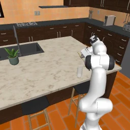
Tip misaligned with the cup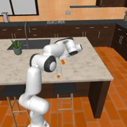
Straw and cup measured from RGB-D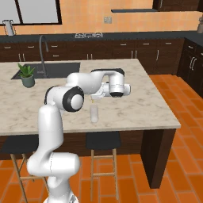
Re-observed at the computed target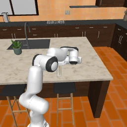
Released inside the cupThe same procedure in three forms: the rule in the skill text, the script it points to, and the call the agent actually made in the episode above. The skill was loaded frozen in that episode; the text is verbatim.
constrained-insertionInsert an observed held object through a visible opening or into a constrained receptacle, using fresh geometry and observable containment checks.
The geometry.py helper computes an axis-alignment rotation and TCP target from two currently observed held-segment points, the current TCP pose, and a desired free-end point. Choose the point order from the visible free end; the result is not a perception estimate. This corrects the rotated offset between the TCP and the insertion tip. Recompute after any changed grasp or base pose. Start above the opening with observed clearance, verify held identity and actual arrival, then descend in short checked segments. Support-plane points alone do not measure a transparent opening height. The helper performs no physical actions.
Contact or slip can change the observed tip-to-TCP relation even while the object remains held. If the object tilts, the grasp opening changes, or insertion stalls, stop descent, unload the contact, and refresh the visible free end and opening before realignment; do not reuse the pre-contact offset.
align_free_end() in geometry.pydef align_free_end(segment_near, segment_tip, tcp_position, tcp_quaternion_xyzw,
tip_goal, target_axis=(0., 0., -1.)):
"""Rotate the measured free-end axis and offset to a caller-chosen goal.
Points use one current world frame in metres; quaternion order is XYZW.
The caller establishes point identity, opening clearance and freshness.
Unknown/degenerate inputs raise ValueError and produce no motion target.
"""
near = _finite_vector(segment_near, 3, "segment_near")
tip = _finite_vector(segment_tip, 3, "segment_tip")
tcp = _finite_vector(tcp_position, 3, "tcp_position")
goal = _finite_vector(tip_goal, 3, "tip_goal")
axis = tip - near
length = np.linalg.norm(axis)
if not np.isfinite(length) or length < .005:
raise ValueError("Observed segment is too short or unresolved")
u = axis / length
v = _finite_vector(target_axis, 3, "target_axis")
norm = np.linalg.norm(v)
if not np.isfinite(norm) or norm <= 1e-12:
raise ValueError("target_axis must be nonzero")
v = v / norm
q = _finite_vector(tcp_quaternion_xyzw, 4, "tcp_quaternion_xyzw")
norm = np.linalg.norm(q)
if not np.isfinite(norm) or norm <= 1e-12:
raise ValueError("tcp_quaternion_xyzw must be nonzero")
q = q / norm
cross = np.cross(u, v)
dot = np.clip(np.dot(u, v), -1., 1.)
if dot < -1. + 1e-8:
basis = np.eye(3)[np.argmin(np.abs(u))]
a = np.cross(u, basis)
a /= np.linalg.norm(a)
delta = np.r_[a, 0.]
else:
delta = np.r_[cross, 1. + dot]
delta /= np.linalg.norm(delta)
a, w = delta[:3], delta[3]
offset = tip - tcp
rotated_offset = offset + 2 * np.cross(a, np.cross(a, offset) + w * offset)
b, z = q[:3], q[3]
newq = np.r_[w*b + z*a + np.cross(a, b), w*z - np.dot(a, b)]
target = goal - rotated_offset
if not np.isfinite(target).all() or not np.isfinite(newq).all():
raise ValueError("Input geometry did not produce a finite target")
return {"position": target.tolist(), "quaternion_xyzw": newq.tolist(),
"quaternion_wxyz": np.r_[newq[3], newq[:3]].tolist(),
"segment_length_m": float(length), "tip_goal": goal.tolist()}| Field | Value | Meaning |
|---|---|---|
segment_near | (3.833, -3.411, 1.140) | observed straw point, back-projected from pixel (126, 123) |
segment_tip | (3.844, -3.414, 1.114) | observed free tip, from pixel (128, 127) |
tcp_position | (3.798, -3.397, 1.188) | current TCP |
tip_goal | (3.779, -3.425, 1.114) | XY above the observed cup; Z = current raised tip height |
→ position | (3.765, -3.417, 1.202) | returned TCP target |
→ quaternion_xyzw | (0.447, -0.607, -0.507, 0.418) | returned TCP orientation (tip axis → downward) |
→ segment_length_m | 0.0285 | length of the measured segment |
As recorded with the call: the goal height is the currently observed raised tip height, not a measured cup-opening height, so the result is an above-cup alignment target rather than a release target. The agent then solved IK, executed the joint target, switched back to OSC, descended in checked segments and re-observed before releasing.
Full files (verbatim)
Contact information from the privileged interface was used during this diagnosis; the rule was written after the episode, and seed 4 continued diagnosis with it.
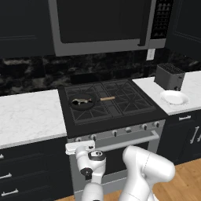
Approach the knob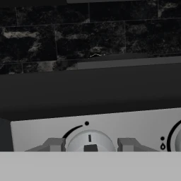
First close hits the fixed base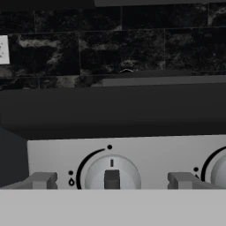
Open and reduce the depth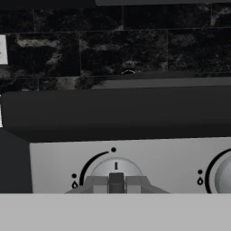
Close on the movable ridge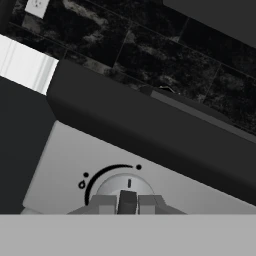
Small turn, check progress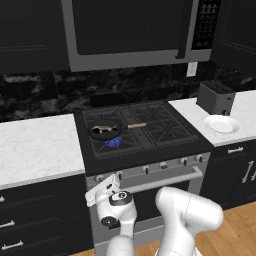
Burner lit, task successThe two clips are different episodes on the same seed; the later run used privileged diagnosis.
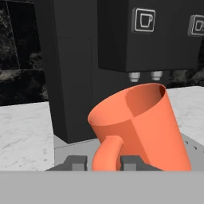
Earlier run: mug tipped at the tray edge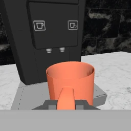
Lift 8 mm to clear the rim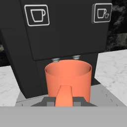
Align by the mug body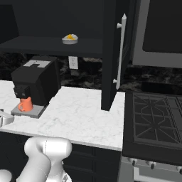
Released, mug stands on its own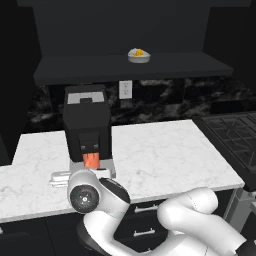
Task successestimate_assembly_geometry (plane fit, tilt and cross-view consistency of a selected region) and compare_assembly_states (response of the object to a short action) — and a skill that specifies when to measure, short-lift, re-check, and hand back to VLA.This recovery episode used the new tools without privileged access and precedes the skill commit.
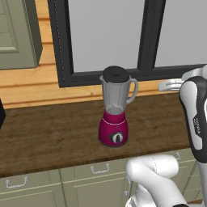
Lid unseated after VLA placement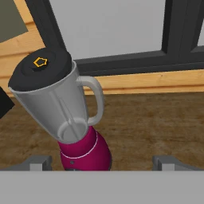
Lid plane fitted by the new tool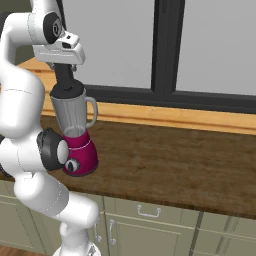
Re-approach the central grip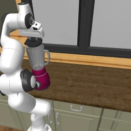
Re-grasp, short lift, re-observe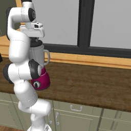
Adjust pose, lower in segments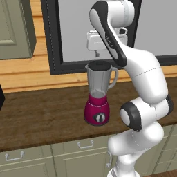
Released, task successRecorded motion at 1× with paused holds that show each actual tool call, its logged inputs and outputs, and the rule later written into the skill.
Skill observable-planar-seating: Recover an observed removable cover resting tilted or incompletely seated on a matching rim or support, using current RGB-D, grasp retention and separation evidence. Use for planar seating relations; not threaded, latched or force-fit closure.
Version 0.1 was written from the privileged diagnosis and the recovery episode above. When it was run in fresh sessions, the state comparisons returned unknown, exposing gaps in what counted as progress and in how the lid face was measured. The revision to v0.2 below rewrites the intervention trigger and the evidence required for surface selection, retention and release; the comparison tool was revised alongside it to test the response of the selected plane rather than the motion of its visible centre (see the tool code diff).
added in v0.2 removed from v0.1 unchanged context, shortened
Decide whether to intervene
Let a productive VLA rollout continue through checkpoints while the target remains visible and progresses toward the requested relation. A pause or a nonterminal result alone does not justify opening the fingers, withdrawing, or regrasping. Intervene on an observed failed relation: empty grasp, loss of retention, persistent tilted seating, or continued attachment during release. If evidence is missing, acquire a useful view before choosing the correction; missing detection is not proof that the object disappeared.
Start with full-task VLA and checkpoint at observable relation changes. Before each continuation, name the unfinished relation and the evidence of progress: target leaving its support with the hand, retained transport, improved face/rim alignment, or stable separation. Hand repositioning, changed appearance, and withdrawal alone do not establish progress.
Near acquisition contact, support contact or release, use shorter checkpoints so a dropped cover is localized before a long retreat. If two successive checkpoints leave the same relation unsatisfied, stop granting another long continuation on that evidence. Inspect wrist plus a useful exterior view and change one concrete hypothesis (pad engagement, contact height, approach, visible face/rim alignment, or support). This is an intervention trigger, not permission to terminate the episode. Resume a longer VLA interval only after observable relational progress returns.
When the same placement remains nonterminal after withdrawal, measure the current selected face and visible rim before another placement correction. If the rim is occluded, make a reachable, clear viewing move and reobserve. A missing rim output when no rim samples were supplied means unmeasured, not unavailable. Do not repeatedly hand the same unresolved seating state back to VLA without a changed physical hypothesis.
Call policy.vla_act with horizon bounded by the remaining episode budget and omit instruction. The …
Use observation.capture_all and inspect wrist plus useful exterior views. When the catalog exposes perception.estimate_assembly_geometry, …
Select an interior planar patch whose relationship to the seating face is visually justified. Reject bevels, curved shoulders, mixed fixture/cover masks and finger surfaces even when plane residual is small. Inspect normal_quality separately from reliable: a well-fitted single-view surface normal may inform attitude, but does not establish surface identity or an accurate cover center. A raised planar grasp feature can support a normal estimate only when its parallel relationship to the cover is visible; its height and center are not the seating plane or object origin. Cross-view agreement supplements semantic selection; it cannot repair the same wrong selection in every view.
Treat face normal, visible patch center and rim center as separate estimates. A partially …
Correct only the failed relation
For persistent tilted seating, a reachable central grasp feature may permit a local regrasp without relocating the destination. Confirm pad clearance and the closing-axis fit from currentwrist views.and a useful exterior view. A backprojected knob surface point is not an EEF grasp pose: the pads must straddle the feature at an appropriate contact height. If closure approaches empty aperture and a short lift leaves the feature on its support, reopening and repeating that EEF target is not a new grasp hypothesis. Close, make a short clearance-limited lift, and observe that the same target leaves its support and follows the hand. An opening measurement or initial lift alone cannot distinguish a secure grasp from hooking. Check again after the first short transport or attitude correction; object rotation relative to the hand is evidence to reassess retention.
Where available, bracket one physical action with fresh geometry estimates and call verification.compare_assembly_states with before_id and after_id. CompareSelect the same visiblephysical planar feature in at least one common camera before and after the sameaction; worldupdate frame.its polygon from each fresh image. The module compares plane equations, not visible-patch centers. Prefer a short nearly translational motion with a visible component away from the feature plane; pure sideways motion cannot resolve this test. following_hand can mean grip or hooking; release_supported is supporting evidence, not official completion. unknown is unresolved, not a passed gate. Raw motion values may support the Agent's judgment only together with current images and their uncertainty; record that distinction. If the feature is occluded, changetoo narrow or not planar enough, obtain a broader semantically justified patch or complementary view before repeating the viewtest. Unknown requires improved evidence, not identical resubmission. Do not enlarge a region across curved shoulders or reacquirefingers itmerely beforeto claimingpass a fit. Plane following cannot verify tangential retention: inspect continued retention after the first small transport or release.rotation.
Once retention and clearance are observed, correct the cover attitude relative to the support …
Full files (verbatim)
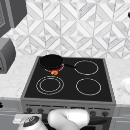
Shrimp left outside the pan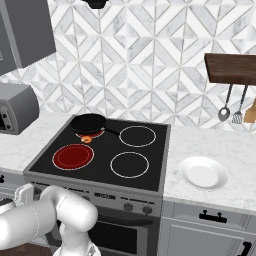
Still outside after a retry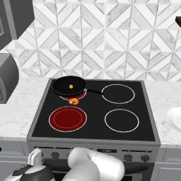
RGB-D points on shrimp and pan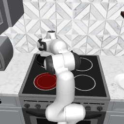
Grasp verified by a short lift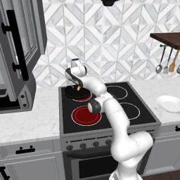
Lowered and released in the pan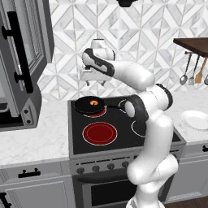
Task successThe routing rule written and frozen after the development episode above (excerpt, verbatim).
2. Compare current relations with the previous checkpoint. Two checkpoints showing the same missing relation trigger at most one 400-step recovery prompt for that relation. Preserve complete task context; add only directly observed state and a concrete correction. The intended food destination is the pan interior. Do not assert held state from proximity or infer the enabled burner solely from color.
3. If the correction fails and food is visibly released outside a reachable pan on an open surface, use current-view pixel backprojection for food and pan interior. Apply the generic pick-place gates: unobstructed approach, close, short-lift hold verification, transport, fresh destination check as needed, lower, release, retreat. Allow at most two grasp attempts with changed current geometry and at most 600 physical recovery steps per episode. Include calibration steps in accounting.
Full files (verbatim)
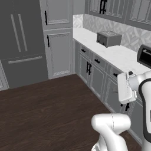
Earlier run: carried off the counter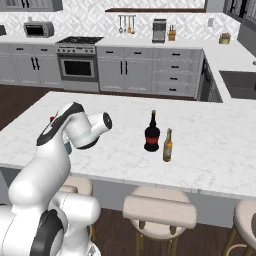
First VLA transport heads the wrong way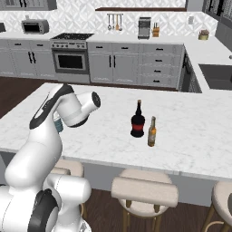
Grasp kept, checked by a short lift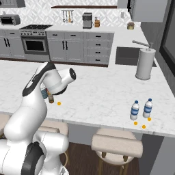
Target group and bottle measured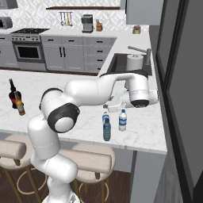
Released at the correct group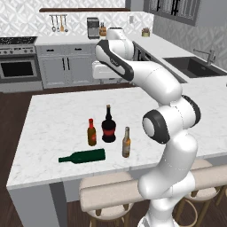
Task successThe second run started from a fresh context without privileged information; explicit state and subgoal prompts were used.
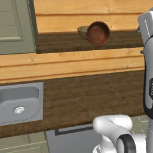
Failed run: small bowl on the rim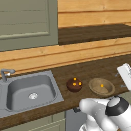
RGB-D point on the small bowl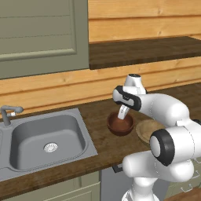
Side-rim grasp, lift to verify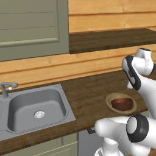
Nested at the source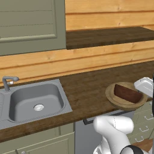
Both bowls lifted together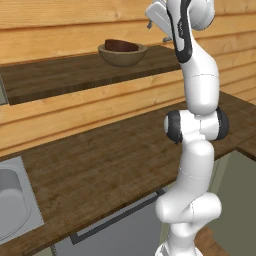
Placed in the cabinetThe candidate policy used in the fresh-context run above (excerpt, verbatim). The file itself notes that it is a candidate policy, not a validated success claim.
When a goal combines containment and transport, test the source-assembly motif from observable_subgoal_sequence.md when its current visual and reachability preconditions hold. Verify stable assembly before transporting the composite. If those preconditions do not hold, choose a different ordering from current evidence.
Check the requested object-object relation separately from placement at the destination. Parallel placement, a vertical object leaning on a rim, or an object moving with an allegedly released gripper requires recovery. Stop blind continuation when the base drifts away from a local unresolved relation. Re-localize first.
Full files (verbatim)
Privileged contact information located the first physical failure; the rule was committed after this episode.
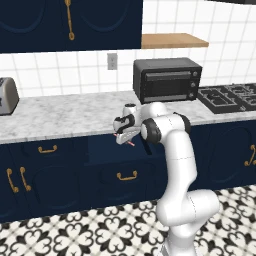
Short lift, grasp holds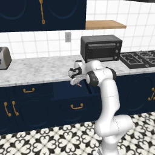
Further lift hits the counter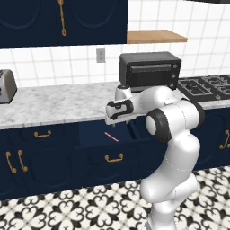
Grasp lost, rod falls back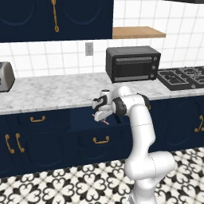
Re-grasp, keep low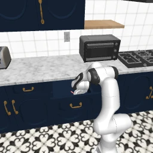
Exit past the overhang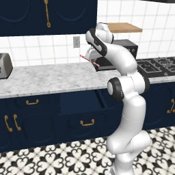
Lifted, still heldNo continuous recording of these runs is available, so this case is shown with still frames.
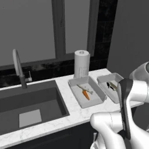
VLA-only: carrots gathered in one box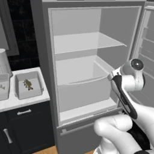
VLA-only: ends at the empty fridge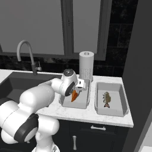
Updated run: two carrots share a box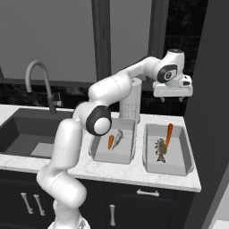
One carrot moved, one per boxOn a Franka arm with a two-finger soft gripper, simulation-acquired skills initialize the real-robot agent, which keeps evolving from physical feedback. Real-world tools include SAM3 segmentation, YOLO-World detection, AnyGrasp grasp generation, cuRobo motion planning, low-level control, a frozen π0.5-based VLA policy and Tether. Within each comparison, conditions share the agent configuration, policy checkpoints, tool implementations, camera access and execution constraints. Skills are updated only between development episodes; evaluation keeps the library frozen and allows replanning and recovery within an episode.
Three tasks with related procedures in the simulation library. Evolution from an empty library (w/o Sim) is compared with evolution initialized from the frozen simulation library (w/ Sim). Development is capped at 150M total tokens per task. The library is frozen after the first complete success and evaluated in 5 trials with different initial layouts.
| Task | Attempts ↓ | Output tokens (M) ↓ | Total tokens (M) ↓ | Success ↑ | ||||
|---|---|---|---|---|---|---|---|---|
| w/o Sim | w/ Sim | w/o Sim | w/ Sim | w/o Sim | w/ Sim | w/o Sim | w/ Sim | |
| Move plate from rack to mat | 4 | 1 | 0.278 | 0.060 | 103.45 | 17.58 | 3/5 | 4/5 |
| Insert straw into cup | 2 | 1 | 0.088 | 0.069 | 22.21 | 34.65 | 2/5 | 5/5 |
| Transfer fried egg from pan onto plate | 2 | 1 | 0.191 | 0.074 | 85.34 | 24.64 | 1/5 | 4/5 |
Simulation initialization reaches the first complete success in one attempt on every task, and frozen-test success improves on all three. Output tokens drop on every task, but total tokens do not: straw insertion rises from 22.21M to 34.65M despite needing fewer attempts.
The plate example pairs an orange-plate failure with a retry after an operator reset. The straw clips compare insertion failures and success using large bowls, transparent cups and the same fixed-camera view; all clips play at 2× actual speed. These qualitative examples are separate from the quantitative evaluation above.
EvoTER · w/ Sim · Development
Approach, grasp and failed lift · 2×EvoTER · w/ Sim · Retry after reset
Grasp, transfer and release · 2×Both clips use the same orange plate, rack, mat and fixed camera. An operator reset the plate between attempts; contact and force choices also changed. The original trial remains failed, and the retry is shown as a development recovery rather than an independent test.
Visual challenge. The transparent cup and thin, transparent straw have faint boundaries against the background, making the cup rim and straw tip difficult to localize. The agent must align the straw with the opening and verify that it remains inside after release.
Baseline · w/o Sim · Frozen reuse
Insertion and release fail · 2×EvoTER · w/ Sim · Successful reuse
Insertion, release and withdrawal succeed · 2×Both clips show large white bowls, transparent cups and transparent straws, the same fixed-camera view and the cup-alignment, release and withdrawal stage at two times speed. Object positions and background items differ. The baseline uses a frozen Real-derived skill learned without Sim; the successful clip is Sim-initialized same-session reuse after a restart, rather than an independent frozen evaluation.
Baseline · w/o Sim · Development
Approach, lift, transfer and missed pour · 2×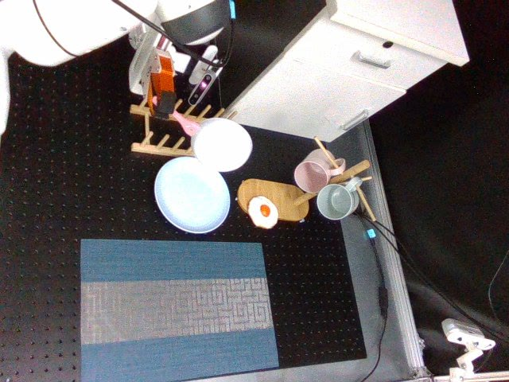
Final observation · alternate fixed cameraEvoTER · w/ Sim · Successful reuse
Grasp, transfer and pour · 2×The baseline video shows approach, pan lift, transfer and pouring motions from the same failed episode as the final observation. The successful clip comes from a separate same-session skill-reuse run. An earlier w/o Sim round also succeeded and is not presented here as a failed run.
Three tasks compare Direct transfer with Real-world evolution. Table setting arranges a plate, bowl and spoon, with later placements accounting for the actual plate and bowl positions. Drawer storage opens a drawer before placing a tissue packet inside. Two-cup hanging hangs both cups on a rack using Tether, a newly available tool for an operation absent from the simulation skill library. Tether is available to both conditions with its implementation fixed. Both conditions start from the same frozen simulation library, independently of short-horizon development. Direct transfer keeps the library unchanged; real-world evolution revises it through real-world development before freezing. Success requires all task-specific goal relations to hold at episode end.
![(a) Numbered key frames of three long-horizon real-robot tasks, each labelled with the tool invoked at that stage: drawer storage (Observe, VLA, SAM3 and cuRobo, cuRobo, gripper), two-cup hanging (agent-selected references, Tether, Observe, agent-selected references and Tether, Tether) and table setting (Observe, SAM3 with agent-computed plate center, cuRobo, AnyGrasp, cuRobo, agent-computed spoon grasp, agent-computed spoon placement). (b) Direct transfer versus real-world evolution: task success rises from 20% to 100%, 100% and 80%; stage progress from 60, 60 and 46.7 to 100, 100 and 93.3.](assets/img/fig5_real.webp?v=20261113-v5)
After real-world evolution, the agent completes table setting in 4/5 trials and drawer storage and two-cup hanging in 5/5 each, compared with 1/5 on each task under direct transfer. Under direct transfer, the five table-setting trials complete 4, 0, 6, 4 and 0 of six stages (stage progress 100×14/30 ≈ 46.7). The recorded revisions update both state-dependent manipulation rules and the procedures for invoking newly available tools. For example, a revised table-setting rule computes the spoon release height from the current bowl geometry and the held-spoon pose.
Two-cup hanging uses Tether, which warps a demonstration trajectory from visually matched grasp and release references and executes it open-loop. Native invocations repeatedly failed because the matched references deviated from the intended actions. After diagnosing these failures and receiving a high-level hint to select the references itself, the agent evolved a skill that selects them from the observed cup, handle and rack, and revises those rejected by cross-view triangulation — while Tether itself remains unchanged.
Long-horizon real-robot executions at 2× actual speed. Table setting shows a separate rerun: recorded action windows are joined, with the initial idle segment trimmed. For two-cup hanging, the pink and blue task execution clips are joined; reset, preparation and waiting between cups are omitted. See Tether Case Studies for individual native failures and evolved-skill successes.
Native Tether matches grasp and release references automatically. The evolved skill selects and checks them across views of the current scene, using the same Tether trajectory warping and execution.
The target sits behind a blue cup already on the rack. Native matching leads the approach into the blue cup; agent-selected references allow the pink cup to be grasped and hung.
Both trials lift the blue cup. In the native trial it falls onto the table at release; with agent-selected references it remains hanging after the gripper withdraws.
The pink cup starts farther left on the board than in the first pair. Native Tether misses the grasp and continues empty-handed; the agent selects new references from the current scene and completes the hang.
Each comparison shows separate trials after scene resets. The pink-cup pairs are development examples; the blue pair compares native R7 with the blue phase of evolved R9. All clips retain the complete recorded action window at 2× speed, in the same camera view.
Two additional executions with agent-selected references: a target among extra cups, and transfer of a pink-cup demonstration to a gray cup.
These two trials illustrate additional successful transfers; matching native trials in these cluttered layouts are not included. The neighboring blue cup changes angle in both executions. Quantitative evaluation remains as reported in Real-World Experiments.
@article{evoter2026,
title = {EvoTER: Evolving Embodied Agents through Tool-Use Experience and Reflection},
author = {Anonymous Authors},
journal = {Under review},
year = {2026}
}